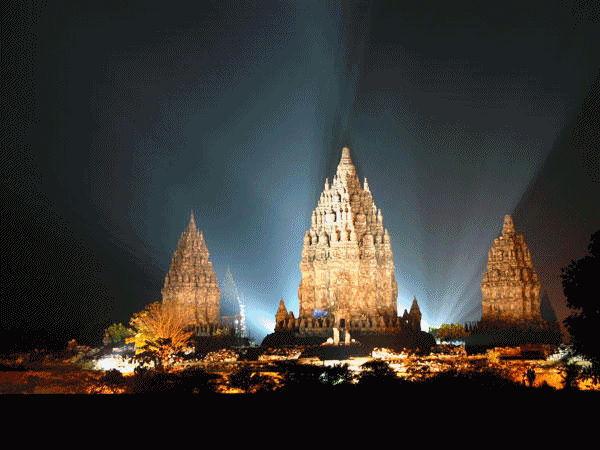

Description
Candi Prambanan atau Candi Roro Jonggrang (bahasa Jawa: ꦕꦤ꧀ꦝꦶꦥꦿꦩ꧀ꦧꦤꦤ꧀, translit. Candhi Prambanan) adalah kompleks candi Hindu (Syaiwa) terbesar di
Indonesia yang dibangun pada abad ke-9 masehi. Candi ini dipersembahkan untuk Trimurti, tiga dewa utama Hindu yaitu dewa Brahma sebagai dewa
pencipta, dewa Wisnu sebagai dewa pemelihara, dan dewa Siwa sebagai dewa pemusnah. Berdasarkan prasasti Siwagrha nama asli kompleks candi ini
adalah Siwagrha (bahasa Sanskerta yang bermakna 'Rumah Siwa'), dan memang di garbagriha (ruang utama) candi ini bersemayam arca Siwa Mahadewa
setinggi tiga meter, dikarenakan aliran Syaiwa yang mengutamakan pemujaan dewa Siwa di candi ini.
Candi ini adalah termasuk Situs Warisan Dunia UNESCO, candi Hindu terbesar di Indonesia, sekaligus salah satu candi terindah di Asia Tenggara.
Arsitektur bangunan ini berbentuk tinggi dan ramping sesuai dengan arsitektur Hindu pada umumnya dengan candi Siwa sebagai candi utama memiliki
ketinggian mencapai 47 meter menjulang di tengah kompleks gugusan candi-candi yang lebih kecil. Sebagai salah satu candi termegah di Asia Tenggara,
candi Prambanan menjadi daya tarik kunjungan wisatawan dari seluruh dunia.